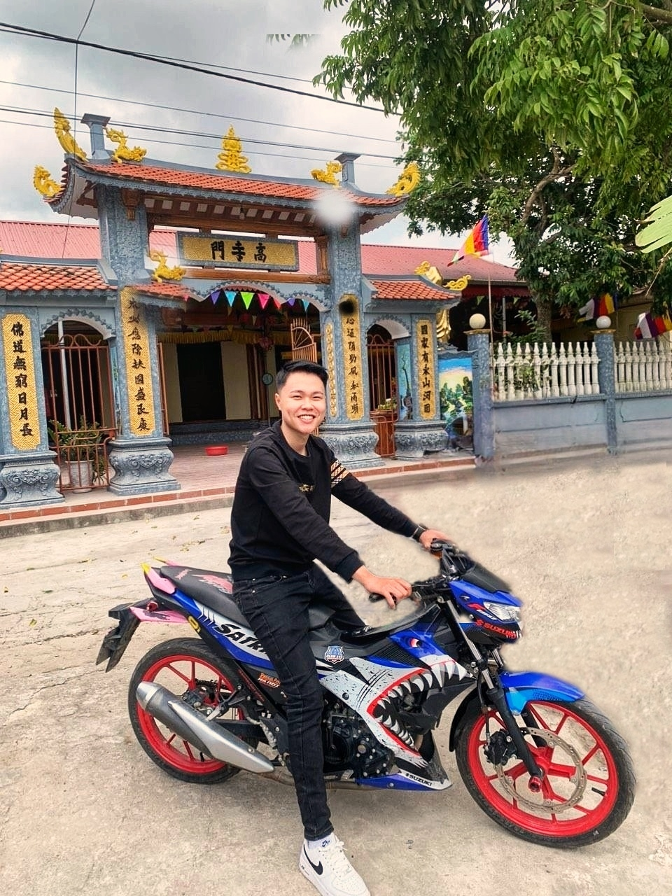

Thông tin cơ bảnHọ và tên: Đỗ Trọng Minh Tiến Ngày sinh: 25/04/2004 Nơi sinh: An Cầu - Quỳnh Phụ - Thái Bình |
Giới thiệu về tôiTôi tên là Đỗ Trọng Minh Tiến,năm nay tôi 19 tuổi Sở Thích của tôi là : Đá bóng,ăn,ngủ,chơi game Tôi đến từ Thái Bình được mệnh danh là quê lúa. Mảnh đất đầy sự lam lũ tảo tần và rất nhiều nhân tài đã được xuất hiện ở đây.Thái Bình là một tỉnh đồng bằng, mang vẻ đẹp chất phác, đôn hậu như chính con người quê lúa. Chính cái bình dị, yên lành, chân chất đó lại là một nét độc đáo và duyên dáng của quê hương hát Chèo. |
Địa chỉ liên kết |